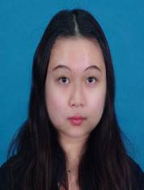
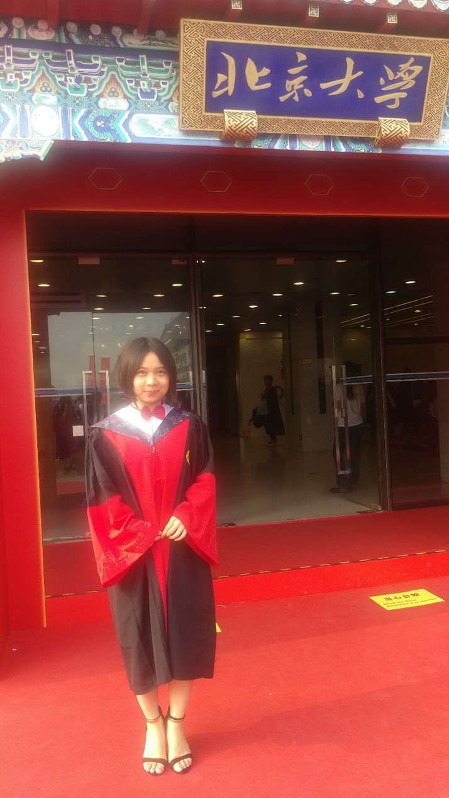
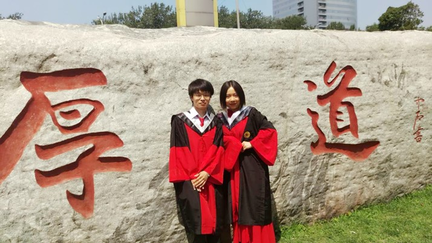
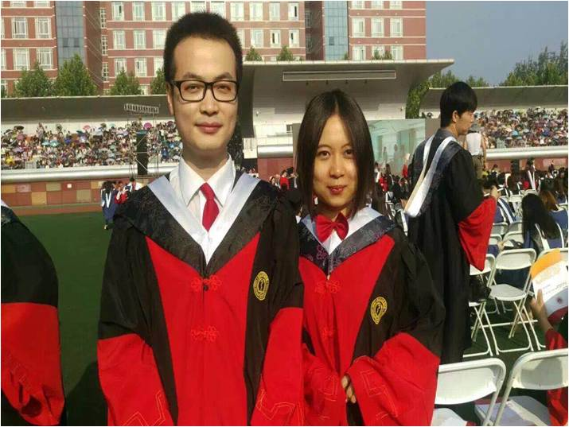
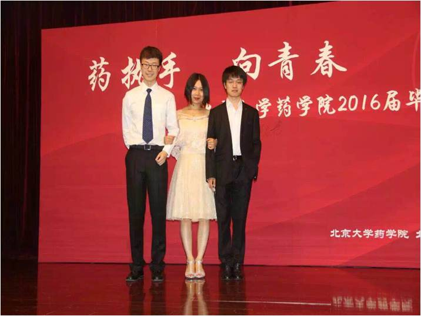
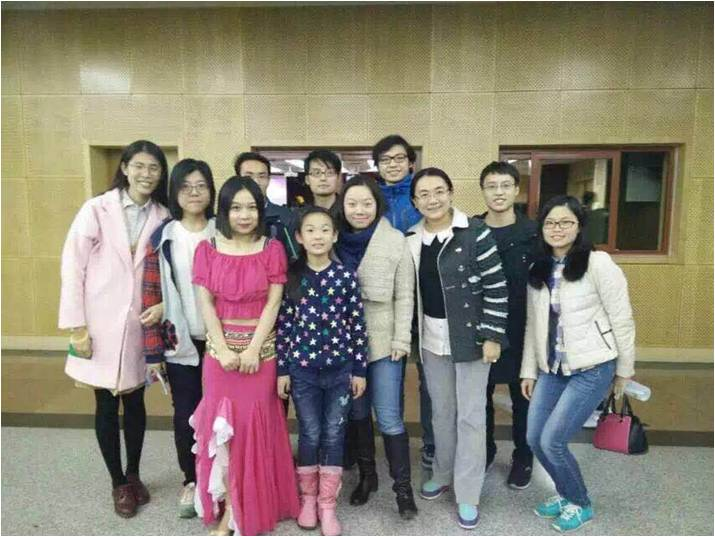

E-mail: happyforever1989@126.com
毕业去向：
深圳湾实验室
个人简历：
徐欢，女，1989年生，北京大学药学院本硕博，师从周德敏院长，北京大学2016年度优秀毕业生。在Science，Journal of controlled release、Nuclear acid research等国际知名期刊发表16篇SCI文章，并申请17项专利。 2016年，作为共同一作发表的文章Generation of Influenza A Viruses as Live but Replication-Incompetent Virus Vaccines在Science上发表，该项研究成果被评为2017年度中国科学十大进展。
2016年加入华北制药集团新药研究开发有限责任公司，2017年担任中国科技部重大新药创制专项“重组人血白蛋白新药及关键技术研究”子课题负责人，课题编号：2017ZX09303008，该项目获得中央财政经费1040.76万元支持。同时负责 “长效重组蛋白药物MG199”及“双特异性抗体MG207”两个1类新药的研发工作。2021年1月担任深圳湾实验室化学生物学研究所副研究员，主要负责新型流感疫苗的开发。
新冠病毒疫情爆发后，徐欢博士积极响应国家号召，第一时间投入新冠病毒小分子抑制剂筛选。组建了深圳湾实验室，武汉大学病毒学国家重点实验室，北京化工大学，南方科技大学新冠攻关联合小组，因此荣获河北省国资委2020年度“青年五四奖章” 和2020年度冀青之星表彰。
荣誉奖励：
北京大学2016年度优秀毕业生
华北制药集团2016-2017年度优秀大学见习生
华北制药集团中央研究院2019年度创新之星
华北制药集团2019年度十佳青年
冀中能源集团2020年度“十大杰出青年”
河北省国资委2020年度“青年五四奖章”
河北省2020年度冀青之星
深圳湾2021年度优秀员工
学习工作经历：
2021.1-2023.7 深圳湾实验室，副研究员
2016.8-2020.12，华北制药集团新药研究开发有限责任公司，项目负责人
2010.9-2016.7北京大学药学院，化学生物学系， 博士
2006.9-2010.7 北京大学药学院，学士
研究方向：
1.具有疫苗潜质的复制缺陷型流感病毒的开发
2.基于蛋白质定点修饰关键技术的生物药物创新及升级换代
3.冠状病毒广谱小分子抑制剂药物的开发
4.流感病毒小分子抑制剂药物的开发
发表论文：
1. H Xu, B Liu, Z Xiao, M-l Zhou, L Ge, F Jia, Y-L Liu, H-S Jin, X-L Zhu, J Gao, J Akhtar, B Xiang, K Tan, G-Y Wang, Computational and Experimental Studies Reveal That Thymoquinone Blocks the Entry of Coronaviruses Into In Vitro Cells. Infectious Diseases and Therapy， 2021 ,10(1):483-494.
2. Xu H, Li J, Song S, Xiao Z, Chen X, Huang B, Sun M, Su G, Zhou D, Wang G, Hao R, Wang N. Effective inhibition of coronavirus replication by Polygonum cuspidatum. Front Biosci (Landmark Ed). 2021，26(10):789-798.
3. Liang Shao, Fan Yang, Yangqing Su, Weijia Li, Jihong Zhang, Huan Xu, Boxuan Huang, Mengsi Sun, Yu Mu, Yuan Zhang, and Fei Yu. Design and Synthesis of Oleanolic Acid Trimers to Enhance Inhibition of Influenza Virus Entry. ACS Medicinal Chemistry Letters, 2021, 12 (11), 1759-1765.
4. Tret'yakova EV, Ma X*, Kazakova OB, Shtro AA, Petukhova GD, Klabukov AM, Dyatlov DS, Smirnova AA, Xu H*, Xiao S*. Synthesis and evaluation of diterpenic Mannich bases as antiviral agents against influenza A and SARS-CoV-2. Phytochem Lett. 2022，51:91-96.
5. Tretyakova EV, Ma X*, Kazakova OB, Shtro AA, Petukhova GD, Smirnova AA, Xu H*, Xiao S*. Abietic, maleopimaric and quinopimaric dipeptide Ugi-4CR derivatives and their potency against influenza A and SARS-CoV-2. Nat Prod Res. 2022，17:1-7
6. Z. Xiao# , H. Xu# , Z. Qu# , X. Ma, B. Huang, M. Sun, B. Wang, and G. Wang* (2022). Active ingredients of Reduning injections maintain high potency against SARS-CoV-2 variants. Chin J Integr Med , accepted.
7. L. Si, H. Xu, X. Zhou, Z. Zhang, Z. Tian, Y. Wang, Y. Wu, B. Zhang, Z. Niu, C. Zhang, G. Fu, S. Xiao, Q. Xia, L. Zhang, and D.Zhou*. (co-first author) Generation of Influenza A Viruses as Live but Replication-Incompetent Virus Vaccines. Science, 2016, 354(6316):1170-1173.
8. Xu H, Wang Y, Lu J, Zhang B, Zhang Z, Si L, Wu L, Yao T, Zhang C, Xiao S, Zhang L, Xia Q*, and Zhou D*. Re-exploration of the codon context effect on amber codon-guided incorporation of non-canonical amino acids in E. coli by the blue–white screening assay. ChemBioChem., 2016. 17(13):1250-1256.
9. Zhang B, Xu H, Chen J, Zheng Y, Wu Y, Si L, Wu L, Zhang C, Xia G, Zhang L, and Zhou D*. Development of next generation of therapeutic IFN-alpha2b via genetic code expansion. Acta Biomater., 2015, volume19, 100-111.
10. Z. Zhang, H. Xu, L. Si, Y.Chen, B. Zhang,Y. Wang, Y. Wu, X. Zhou, L. Zhang, and D.Zhou*. Construction of an inducible stable cell line for efficient incorporation of unnatural amino acids in mammalian cells. BBRC, 2017,489(4):490-496.
11. Wu L, Chen J, Wu Y, Zhang B, Cai X, Zhang Z, Wang Y, Si L, Xu H, Zheng Y, Zhang C, Liang C, Li J, Zhang L, Zhang Q, and Zhou D*. Precise and combinatorial PEGylation generates a low-immunogenic and stable form of human growth hormone. J Control Release., 2017, 249: 84-93.
12. Y.Wu, H. Zhu, B. Zhang, F. Liu, J. Chen, Y. Wang, Y. Wang, Z. Zhang, L. Wu, L. Si, H. Xu, T. Yao, S. Xiao, Q. Xia, L. Zhang, Z. Yang* and D.Zhou*. Synthesis of site-specific radiolabeled antibodies for radioimmunotherapy via genetic code expansion. Bioconjugate Chem., 2016,27(10): 2460-2468.
13. Zhang B, Yang Q, Chen J, Wu L, Yao T, Wu Y, Xu H, Zhang L, Xia Q, and Zhou D*. CRISPRi-Manipulation of Genetic Code Expansion via RF1 for Reassignment of Amber Codon in Bacteria. Sci rep., 2016, SREP-15- 29352 A.
14. Lu J, Cheng K, Zhang B, Xu H, Cao Y, Guo F, Feng X, Xia Q*. Novel mechanisms for superoxide-scavenging activity of Human manganese superoxide dismutase (SOD2) determined by K68 key acetylation site. Free Radic Biol Med. 2015 , pii: S0891-5849 (15)00174.
15. Zheng Y, Yu F, Wu Y, Si L,Xu H, Zhang C, Xia Q, Xiao S, Wang Q, He Q, Chen P, Wang J, Zhang L, and Zhou D.* Broaden the versatility of lentiviral vector as a tool in nucleic acid research via genetic code expansion. Nucleic Acids Res.,2015, doi: 10.1093/ nar/ gkv202.
16. Li Y, Wang J, Gao X, Han W, Zheng Y, Xu H, Zhang C, He Q, Zhang L, Li Z* and Zhou D*. C-Met targeting enhances the effect of irradiation and chemical agents against malignant colon cells harboring a KRAS mutation. PlosOne. 2014. 9(11): e113186.
申请专利：
1. 徐欢，宋世东等，芦丁作为冠状病毒广谱抑制剂的新用途，中国，202010491871.3。
2. 徐欢，童贻刚等，卡非佐米作为冠状病毒广谱抑制剂的新用途，中国202010522515.3。
3. 徐欢，童贻刚等，奈非那韦作为冠状病毒广谱抑制剂的新用途，中国202010527935.0。
4. 徐欢，童贻刚等，阿匹莫德作为冠状病毒广谱抑制剂的新用途：中国，202010915364.8。
5. 徐欢，严欢等，氯米芬作为冠状病毒广谱抑制剂的新用途，中国，202010920187.2。
6. 徐欢，严欢等，百里醌作为冠状病毒广谱抑制剂的新用途，中国，202010915362.9。
7. 徐欢，周德敏等，没食子酸和/或绿原酸治疗冠状病毒感染的用途，中国，202110339942.2。
8. 王冠宇，徐欢等，紫草素和左旋紫草素在冠状病毒防治中的应用，中国，202210546284.9
9. 徐欢，周德敏等，雷公藤在治疗冠状病毒感染中的新用途，中国，202110919369.2
10. 徐欢，周德敏等，红茶预防和治疗冠状病毒感染的新用途，中国，202110881538.8
11. 徐欢，周德敏等，酪氨酸激酶AXL抑制剂作为冠状病毒广谱抑制剂的新用途，中国，202110892775.4
12. 周德敏，夏青，徐欢等，哺乳动物细胞中高效多点插入非天然氨基酸的系统，201610068626.5，已授权。
13. 周德敏，夏青，徐欢等，携带正交tRNA/氨酰tRNA合成酶的稳定细胞系的构建，201610055542.8，已授权。
14. 周德敏，吴一鸣，张博，徐欢等，非天然氨基酸标记的新型抗体-药物偶联物及其制备，201510170015.7。
15. 周德敏，司龙龙，周雪莹，张子威，徐欢等，定点突变的流感病毒，其活疫苗及其制备方法和应用，201511029463.1。
16. 周德敏，王妍，刘思沫，徐欢等，携带正交tRNA/氨酰tRNA合成酶的稳定细胞系的构建201710612747.6 。
17. 周德敏，司龙龙，周雪莹，张子威，徐欢等，突变的病毒、其制备方法和应用201680076047.3 。
18. 肖苏龙、周德敏、马欣源、徐欢，三萜类化合物及其抗病毒用途，受理号： 2022108018099。
感言：
现实者不功利，理想者不空谈，仁爱者不软弱，刚直者不偏激；每个人都是尽责的公民，每个人都能坚守自己独立的人格，每个人都能为他人的幸福拓展纵深。
座右铭：
画中有天地，笔下有乾坤
精彩瞬间




